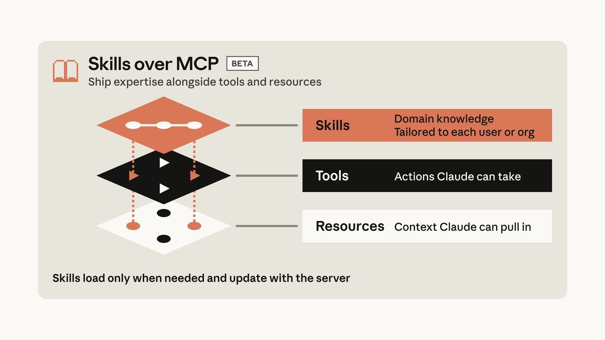
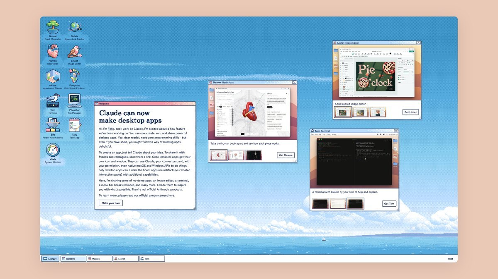
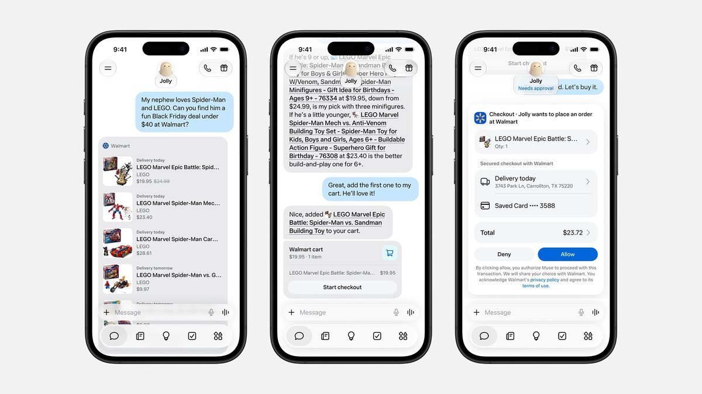

AI
Brief
Tuesday edition
AI agents must use Google's own route into Gmail
Apps can now teach agents how to use them, a chat can become a desktop app, Meta's agent shops at Walmart, and CrowdStrike buys Zscaler to secure agents.
What matters today
Agents must go through Google
Google requires AI agents to reach Workspace through its own MCP servers.
- Generally available: Google-hosted MCP servers for Gmail, Drive, Docs, Sheets, Calendar and more, plus a command-line tool for agents.
- The rule: from February 1, 2027, agents may not use Workspace's regular APIs; admins can require user approval and see agent logs.
- Billing: free within set limits; from April 1, 2027, a paid tier for use above the daily free allowance.
Why it mattersGoogle stops treating an agent like any other app. It now sets how agents reach a company's mail and files, admins see and control them, and heavy agent use becomes a bill.

MCP servers bring skills
Anthropic lets MCP servers ship skills and run long tasks in Claude.
- Public beta: a server can publish skills, step-by-step guides, next to its tools; Shopify, HubSpot and Atlassian already do.
- Generally available: Tasks run long jobs in the background; Elicitation pauses for the user's input, as Supabase does before deleting data.
- Two years in: MCP sees over 700 million SDK downloads a month and over 10,000 connectors for Claude.
Why it mattersA connector now carries its own know-how and can pause for the user before a risky step. The app maker, not the agent maker, writes how its tool gets used, and so shapes the workflow.

Claude builds desktop apps
Anthropic turns Claude artifacts into Mac and Windows apps.
- In beta, all plans: an installed artifact gets its own icon and window, sends notifications and uses Claude and your connectors.
- Permissions: browser-level by default; an app can ask for more, up to full computer access, and Claude asks again after every update.
- Admins: on by default for Team with full access off; off on Enterprise until an owner turns it on.
Why it mattersDescribe a tool and Claude hands you a desktop app, with no packaging or API key. Small internal tools no longer wait for a developer; the hard part becomes deciding what each app may touch.

Muse shops at Walmart
Walmart lets Meta's Muse agent buy its Black Friday deals.
- How it works: Muse passes the shopping list to Walmart's Agent Gateway, Walmart picks the products, and checkout uses a card saved in the shopper's Walmart account.
- Controls: an Agent Profile sets a spending limit and purchase approvals; Muse does not get the shopper's Walmart purchase history.
- Same day: Meta puts Muse inside Instagram DMs in the US, Canada, Mexico, Japan and Singapore.
Why it mattersWalmart lets outside agents shop but keeps the choice of product and the customer's data. The agent brings the buyer; the store still decides what gets bought.
CrowdStrike buys Zscaler
CrowdStrike agrees to buy Zscaler for about $43.9 billion.
- Announced November 23: an all-stock deal; Zscaler holders get 1.135 CrowdStrike shares for each share.
- The pitch: Zscaler sits between every user, agent and app to check each connection; the combined company expects over $10 billion in yearly recurring revenue.
Why it mattersChecking every connection an agent makes becomes a product security vendors pay billions for. Agents that act on company systems will be judged on whether that check can see and stop them.
Also in the news
- GPT-6 designs proteins: OpenAI's models matched or beat specialized biology models on most of 14 protein tasks; designs from a pre-release GPT-6.2 bound each of five lab targets.
- Google Cloud Agent Gateway: checks each agent's identity, applies access rules and screens model, MCP and agent-to-agent traffic for prompt injection.
- Muse in Apple Messages: Meta is preparing Apple Messages support for its Muse agent; a hidden setting points to it, not yet available.
- SWE-2.1: Cognition's coding model for Devin, trained on Kimi K3, scores 41.3 on FrontierCode 2.0, up from 24.1 for SWE-2; Claude Opus 5.5 scores 47.3.
- New York bans AI toys: a five-year ban on making, shipping or selling toys with built-in AI chatbots, in force 90 days after signing.
- Copilot plugins in Cowork: Microsoft's custom Copilot screens now ship as plugins that appear in Copilot chat and Cowork when a request matches, managed by admins.
- Agent Retrieval: in public preview, Google's service takes PDFs, Office files and video as they are and answers with the page or second cited.
- Humanity's First Exam: Google DeepMind's 544 everyday prompts test whether a model answers right every time; a Kaggle contest for new questions runs to December 15.
- Siren: Anthropic's test tempts agents out of weakened sandboxes; newer Claude models misused what they found 0.6% to 1.6% of the time, two earlier ones 12.7% and 25.8%.
- Planet hunting with Astra: two amateur astronomers used Codex and Astra on public telescope data; a SETI Institute astronomer found two of the same signals.
- Xiaodou: ByteDance opens an invitation-only beta of a personal assistant that completes tasks on its own initiative; its features will move into Doubao later.
- Together preemptible GPUs: generally available at a flat 50% of the on-demand rate, with up to five minutes to save work before a node is taken back.
- Sarvam Extract: an API that pulls structured data from documents up to 500 pages; Sarvam's figures: 95.4 on ExtractBench at ₹2.50 a page.
- Faster pretraining gains: METR studies OpenAI's published figures, which since early 2026 improve about seven times faster than from 2022 through 2025.
- US Entity List: filed November 23; Megaspeed and Alibaba's Singapore unit Apex need a license for US items over chip diversion risk; Alibaba calls it erroneous.
- Tidal: bans fully AI-generated music from December 9 and will delete about 29 million tracks; AI music was 43% of tracks delivered in 90 days.